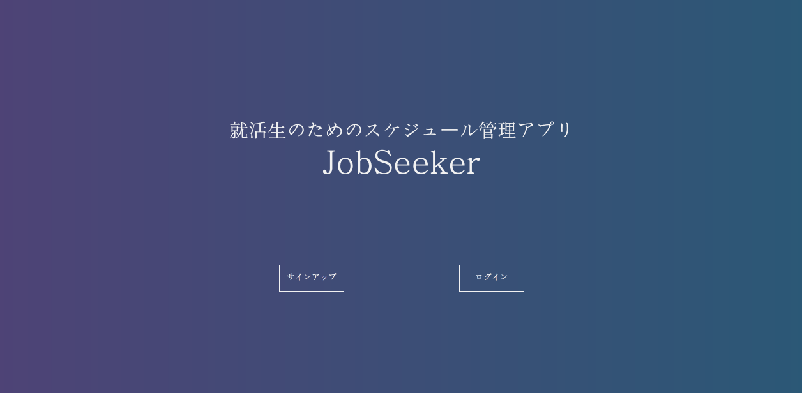
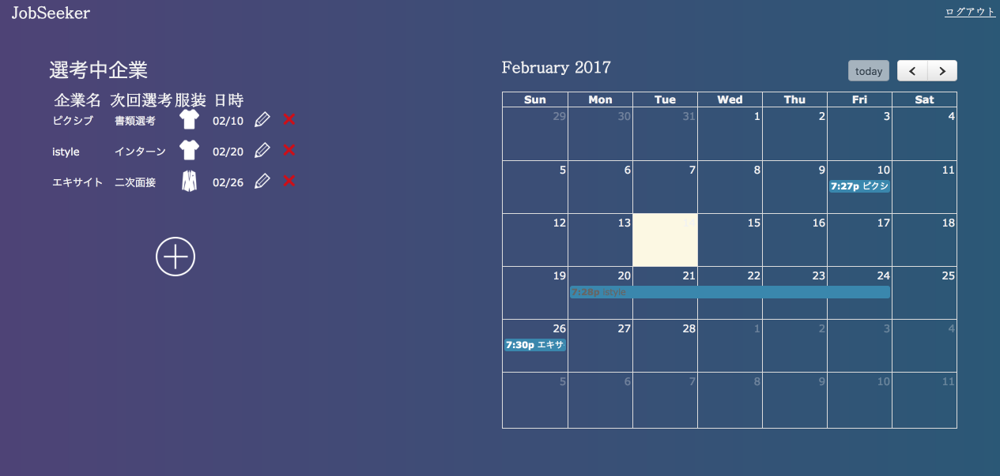
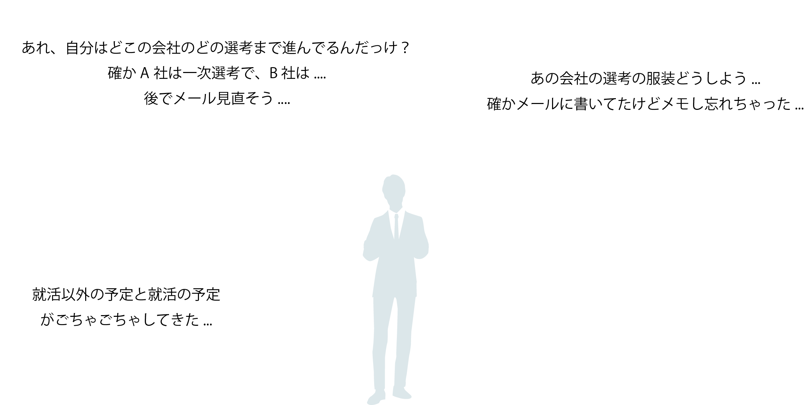

就活生のためのスケジュール管理アプリ
jobseeker


このアプリでこんな問題を解決できます
自分の選考中企業と選考ステップを簡単に管理
機能 : 選考中の企業名と、その企業との選考ステータスを登録しておくことができます。選考ステータスとして登録できるのは、次回選考のステップと服装、日時となります。登録されたスケジュールは、カレンダー上に表示され、直感的に自分の予定を理解することができます。
きっかけは自分の就活を楽にしたい、という思い
背景 : 就職活動が本格的に始まり、スケジュール管理の重責を感じながら日々を過ごしており、もっと就活を楽にしたいと感じこのアプリを制作しました。最初に、どんな機能があれば就活が楽になるだろうかと考えました。発見した課題としては、今自分がどの企業を受けていて、どんな選考状況なのかを管理できていないことでした。ですので、アプリのメインの機能としては選考中企業とその選考ステップを登録できることにしました。その後スケジュール管理アプリには何が必要かを考え、カレンダーで自分がいつ面接を受けるのかを直感的に理解できるようにしました。実際に自分で使っていて、選考場所もわかると便利だと感じ、現在地から選考場所までの地図を表示する機能を今後実装する予定です。
使用言語、環境 : Ruby on Rails , PostgreSQL , heroku
URL: https://job-seek-er.herokuapp.com/
BACK